문해력 탐험대 · 선생님
학생 문해력을 AI로 진단하고 맞춤 학습으로 연결하는 교육 서비스. 운영 중이던 학생용 문해력 탐험대 고도화와 선생님·기관용 관리자 사이트 개발.
목차
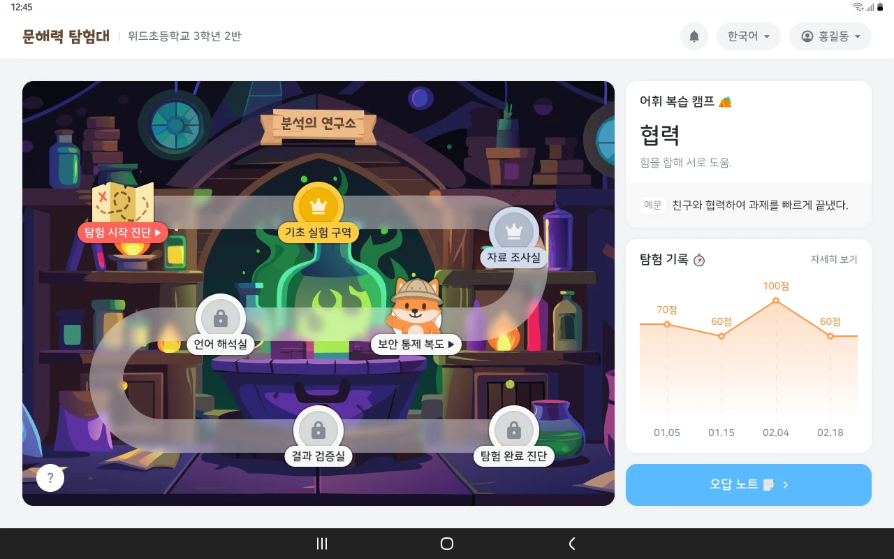
사용 기술
학생 화면 개선과 관리자 사이트 화면 전체 개발. 관리자 사이트는 등록·수정·삭제·업로드처럼 성공할 수도 실패할 수도 있는 작업이 많아, 잘 됐는지, 문제가 생겼는지, 한 번 더 확인할지를 화면에 분명히 보여주는 데 가장 공을 들임
프로젝트 소개
읽기는 모든 학습의 출발점이지만, 교실에서는 학생별 읽기 습관과 수준 파악이 어려움. 교과서 지문과 시선 추적으로 읽는 방식까지 측정해 어휘력·사실적·추론적·비판적·감상적 이해 5개 유형으로 진단. 드러난 약점은 맞춤 문제로 연결.
작업은 두 갈래. 이미 운영 중이던 학생용 문해력 탐험대 화면 고도화와, 새로 만든 선생님·기관 관리자 사이트 개발.
문해력 탐험대 고도화
학생이 진단을 받고 학습하는 서비스. 운영 중인 화면 개선
학생 화면 개선
학생이 쓰는 문해력 탐험대 앱 화면 작업. 학생은 탐험 지도에서 단계를 골라 진단이나 학습을 시작하고, 문제를 다 풀면 결과 화면에서 틀린 문제와 내 실력을 확인.
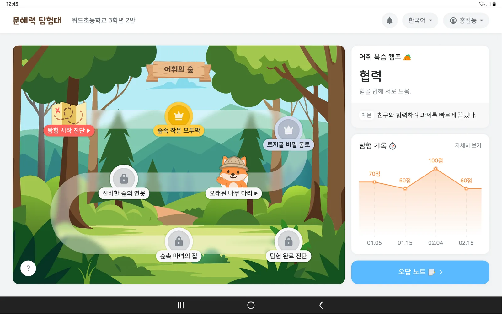
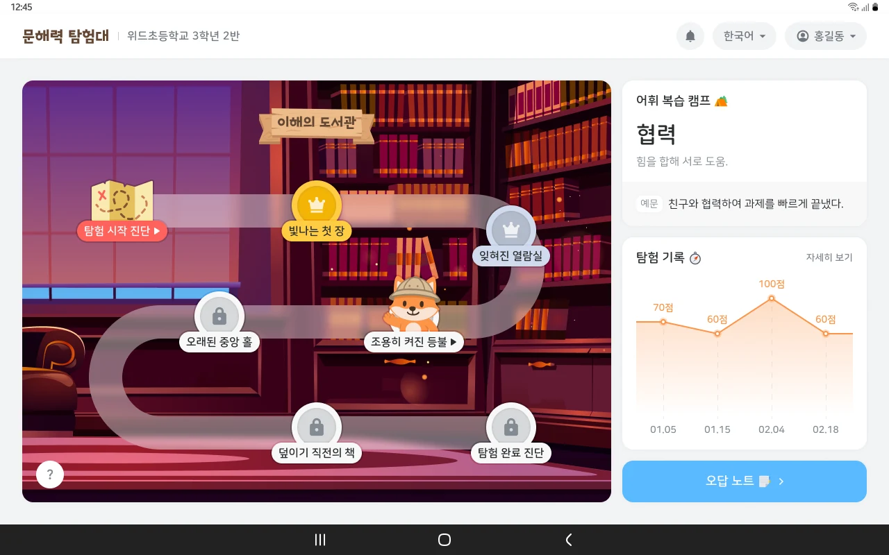
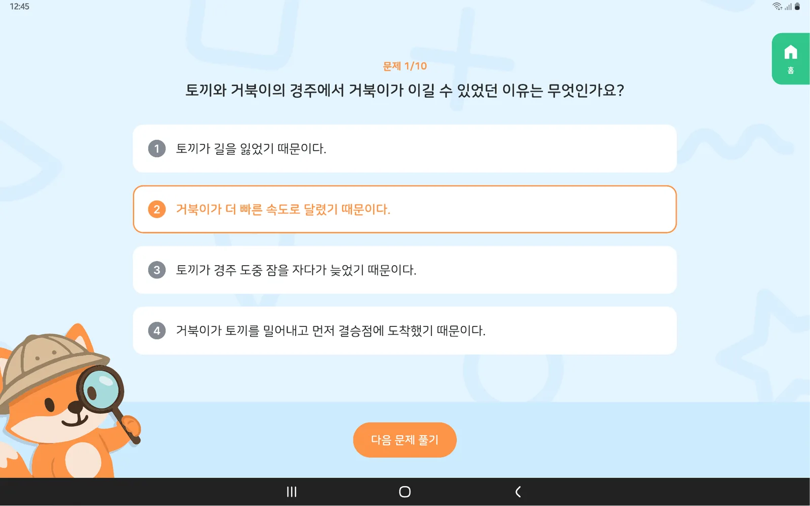
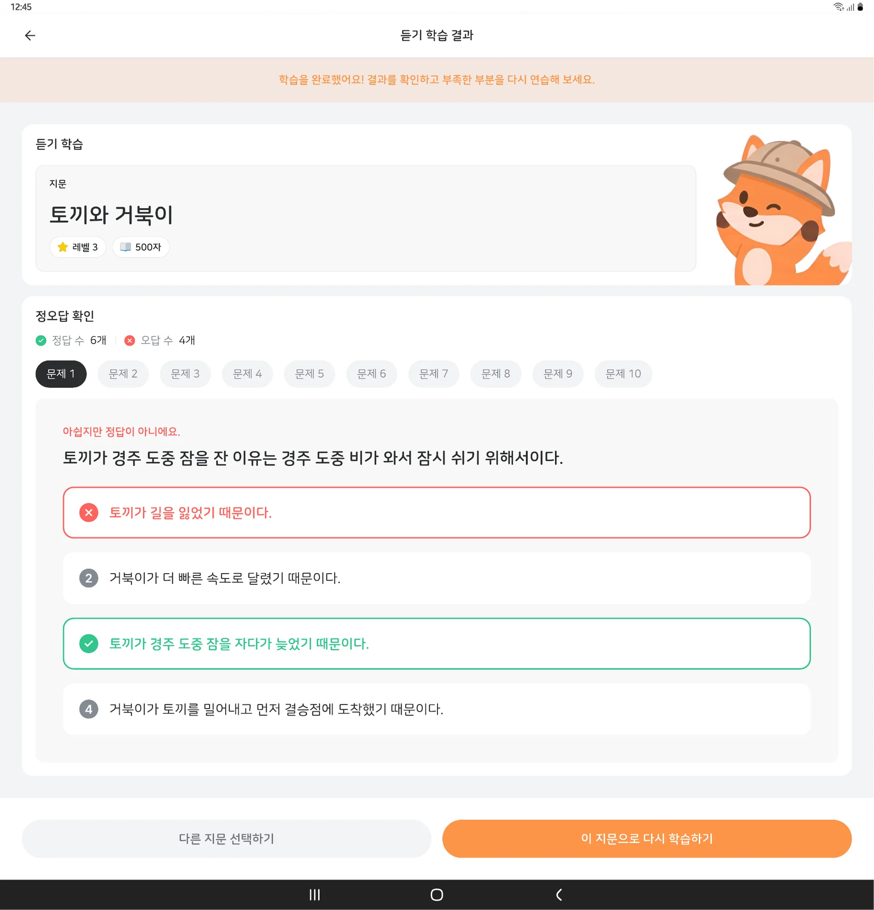
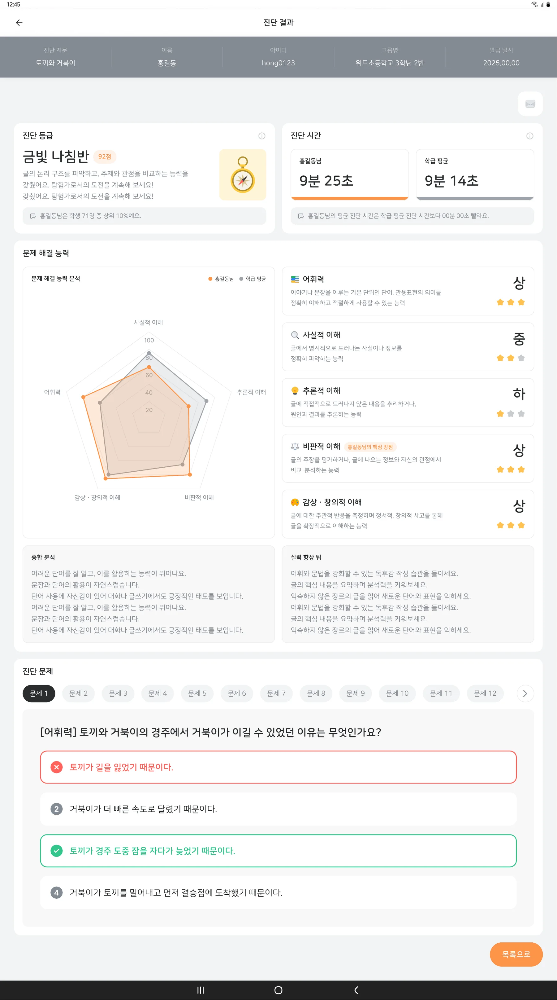
선생님 페이지
기관 관리자와 선생님이 쓰는 관리자 사이트. 새로 개발. 진단이 정확해도 교사가 결과를 읽고 다음 수업에 쓰지 못하면 소용이 없어, 데이터를 어떤 단위로 묶어 보여줄지가 설계의 중심
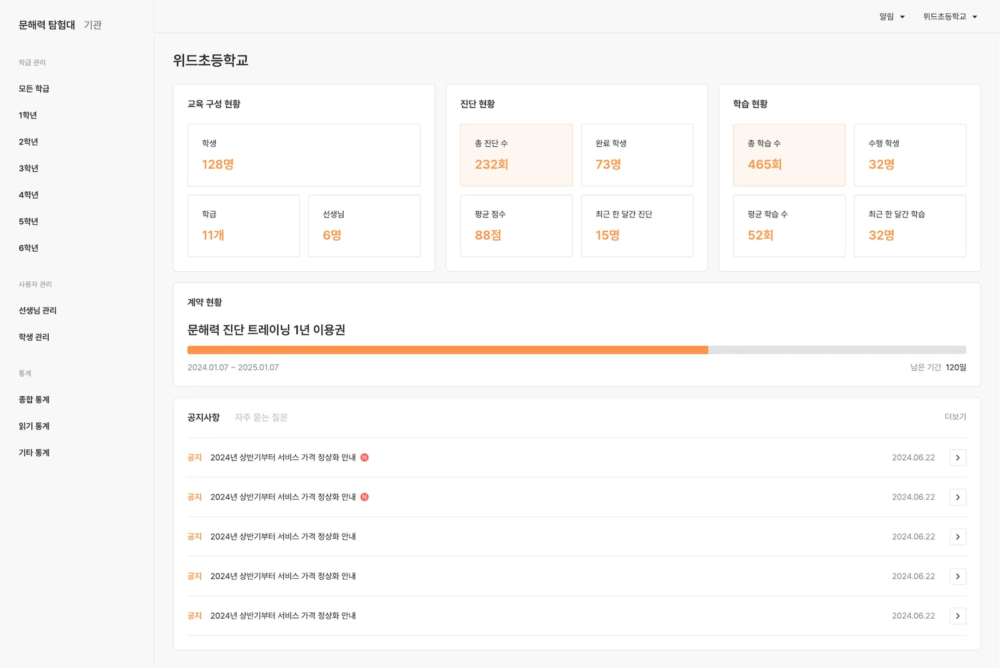
권한이 둘로 갈리는 화면
기관 관리자와 선생님이 같은 관리자 사이트를 공유. 기관 관리자는 기관 전체, 선생님은 본인 그룹만 조회. 메뉴가 아예 없는 경우와 범위만 좁아지는 경우의 표현 방식이 첫 과제.
| 기능 | 기관 관리자 | 선생님 |
|---|---|---|
| 그룹 · 선생 관리 | 전체 그룹 · 학생 · 선생님 | 본인 그룹 · 학생만 |
| 진단 · 학습 자료 관리 | 진단 자료 및 학습 자료 설정 | 본인 그룹 자료만 |
| 결과 열람 리포트 | 모든 그룹 | 본인 그룹만 |
| 통계 | 전체 기관 통계 | 없음 |
| 계정 · 이용권 관리 | 기관 단위 관리 | 없음 |
쓸 수 없는 기능을 회색으로 남겨 두면 그것부터 눈에 걸림. 선생님 계정은 통계·계정 관리를 메뉴에서 제외하고, 범위만 좁아지는 화면은 같은 컴포넌트에 조회 범위 표기.
기관 (학교)
- 학급 관리
- 학급 생성 · 선생님/학생 배정
- 선생님 · 학생 계정 생성
- 통계리포트 확인
학생
- 로그인
- 진단
- 리포트 생성
- 트레이닝진단으로 반복
선생님
- 학급 관리
- 학생 계정 생성 · 배정
- 학습 관리리포트 확인
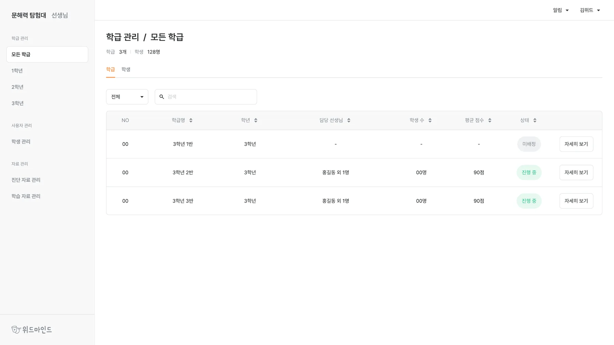
등록과 배정
학기 초에는 계정을 한꺼번에 만들어야 해서 개별 등록과 엑셀 일괄 등록 모두 지원.
일괄 등록에는 실패 행이 반드시 발생. 파일을 다시 열어 대조하지 않도록 결과를 행 단위로 반환하고 고칠 곳을 화면에서 표시. 등록한 계정의 그룹·학급 배정과 수정·정지까지 같은 화면에서 처리.
- 양식 다운로드학생 계정 생성 양식 (.xlsx)
- 파일 업로드작성한 양식 업로드 후 계정 생성
- 실패 시행 번호와 사유 표시. 예: 34번 행 학급명 오입력
- 완료 시등록 인원 표시, 등록 완료 계정 파일 다운로드
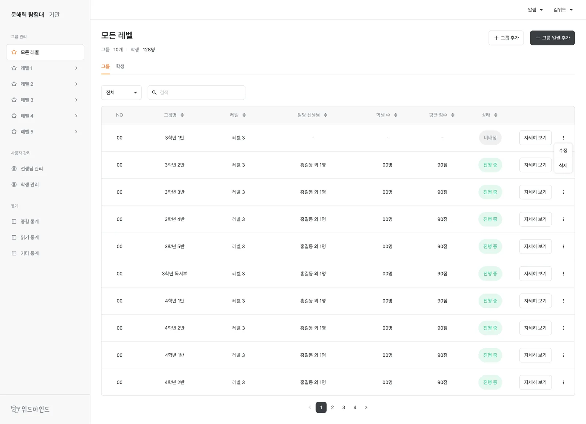
진단 리포트
리포트는 선생님이 보는 순서에 맞춰 그룹 · 학생 · 개별 진단 3단위로 구성. 우리 반이 어디쯤인지 보고, 눈에 걸리는 학생을 찾고, 그 학생이 어느 문항에서 틀렸는지까지 내려가는 순서.
세 화면을 하나의 흐름으로 연결하고, 한 단계 내려가도 앞에서 보던 기준 유지. 정답률과 성취 수준은 표와 그래프를 함께 배치해 수치를 읽기 전에 형태가 먼저 보이도록 구성.
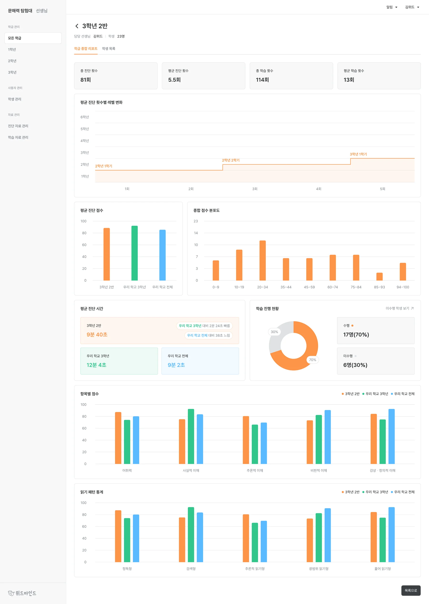
- 학급 종합 리포트진단·학습 횟수, 레벨 변화, 점수 분포로 우리 반 위치 확인
- 학생 리포트학생 목록 탭에서 학생 선택 후 개인 기록으로 이동
- 개별 진단 결과진단 한 회차의 등급, 5개 이해 유형, 문항별 정오답
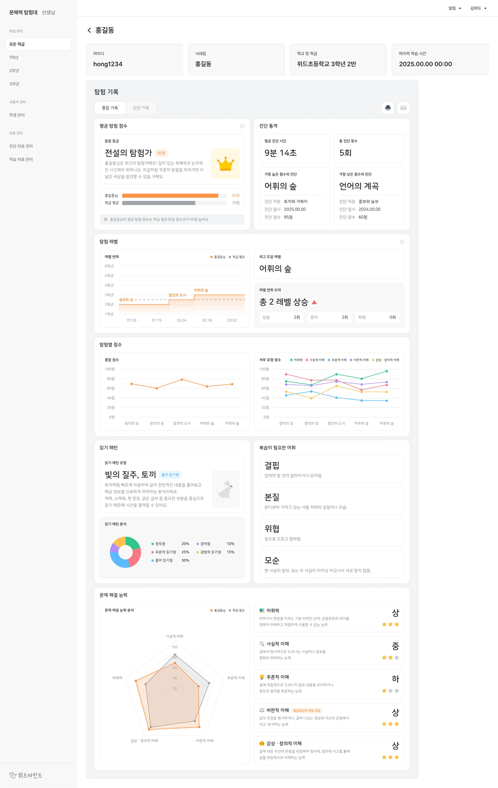
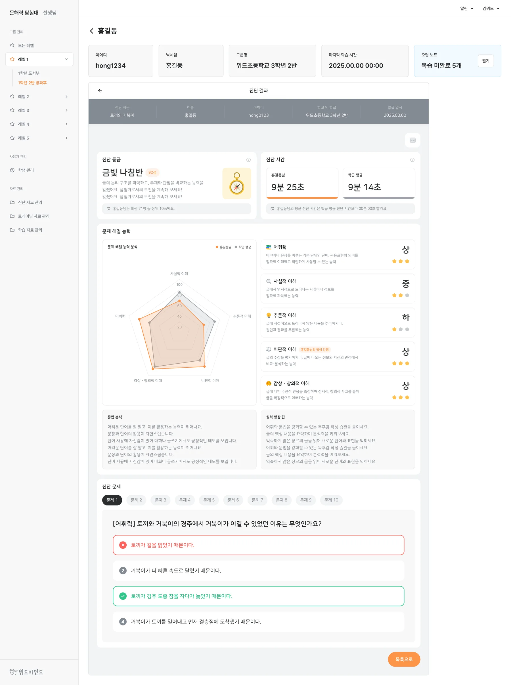
통계와 자료 관리
기관 관리자는 학교·학년·학급 단위로 데이터 조회. 기간과 단위를 바꿔 가며 보다 보면 무엇을 보고 있는지 놓치기 쉬워, 적용된 기준을 화면 위에 표시.
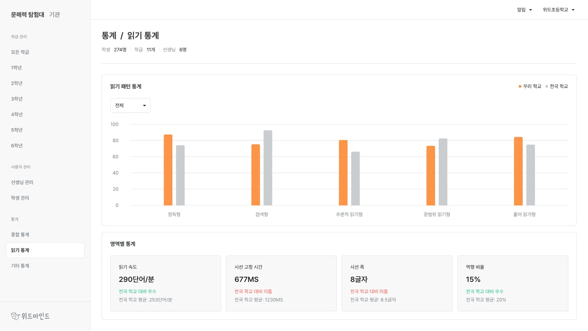